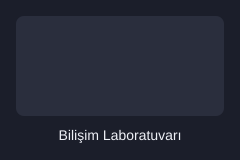
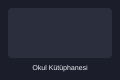

Hakkımızda
Okulumuz 1985 yılında kurulmuş, bugüne kadar binlerce öğrenci yetiştirmiş köklü bir teknik lisedir. Amacımız öğrencilerimize hem teorik bilgi hem de uygulamalı beceri kazandırmaktır.
Kayıt döneminde başvuruların 1-15 Eylül arasında alındığını unutmayın.
Bölümlerimiz
- Bilişim Teknolojileri
- Elektrik-Elektronik Teknolojisi
- Makine Teknolojisi
- Muhasebe ve Finansman
Tanıtım Videomuz
Okulumuzdan Kareler


Haftalık Ders Programı (11. Sınıf - Bilişim)
| Gün | 1-2. Ders | 3-4. Ders |
|---|---|---|
| Pazartesi | Matematik | Web Tabanlı Uygulama Geliştirme |
| Çarşamba | Web Tabanlı Uygulama Geliştirme | İngilizce |